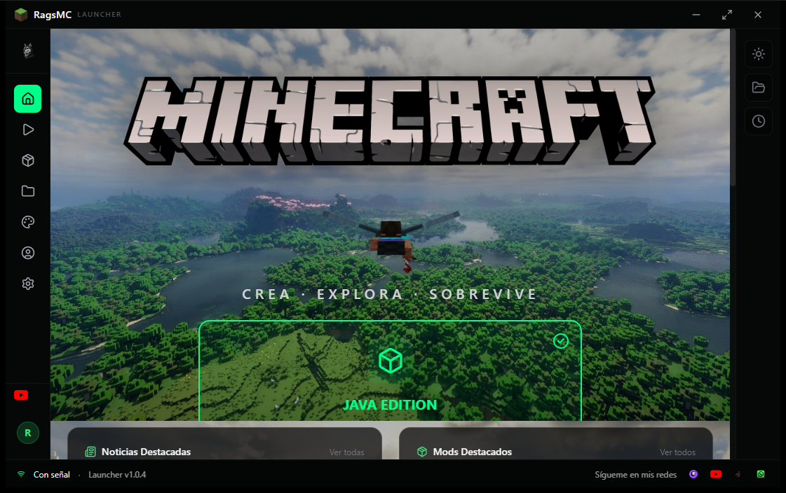
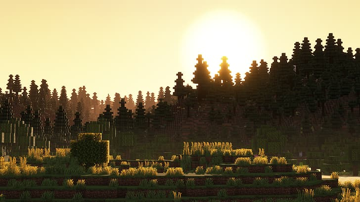

01
Gestor de mods, sin salir del launcher
Instalá, activá y desactivá mods desde una sola pantalla. Menos carpetas, menos errores.
Rápido, simple y con identidad propia. Todo lo que necesitás para jugar, en un solo lugar.

01El proyecto
RagsMc nació de una idea simple: jugar Minecraft debería ser rápido, claro y sin pelearte con la configuración.
Es un proyecto independiente, hecho por un jugador y mantenido junto a la comunidad. Sin telemetría, sin cuentas obligatorias y sin funciones que no pediste.
02Características
Cada parte del launcher está pensada para que llegues al mundo en menos clics, sin sacrificar control.
Instalá, activá y desactivá mods desde una sola pantalla. Menos carpetas, menos errores.
Cambiá de versión y de loader sin reinstalar nada. Tus instalaciones quedan a un clic.
Sin pantallas intermedias ni configuraciones eternas. Abrís y jugás.
Temas, fondos y ajustes que se quedan con vos, no que se resetean solos.
Avisos cuando importan. Instalás la nueva versión cuando vos querés.
Logs en tiempo real para entender qué pasa con tus mods, sin adivinar.
03El servidor
Entrá a RagsMc y jugá con la comunidad. Una IP, una versión, cero vueltas.
Supervivencia, comunidad y un servidor que no se cae cada vez que alguien pone un bloque de más.
ragsmc.dpdns.org
Cómo conectarte
Abrí Minecraft 1.21.1 con Forge instalado.
Entrá a Multijugador y agregá un servidor.
Pegá la IP y conectate. Nos vemos adentro.

04Galería
Capturas reales del launcher y del servidor. Sin renders, sin humo.
Todo a un clic: jugar, instalar, ajustar.
05Hoja de ruta
Sin fechas inventadas. Cada fase se publica cuando está lista.
Base del launcher, instalaciones y arranque de Minecraft.
CompletadoCorrecciones, rendimiento y soporte para 1.21.1.
CompletadoActivar, desactivar y actualizar mods sin salir del launcher.
En desarrolloLlevar el launcher a más sistemas, con la misma experiencia.
PlanificadoSincronizar ajustes y perfiles entre dispositivos.
ExplorandoEl roadmap puede cambiar. El feedback de la comunidad manda.
06Descarga
Instalador para Windows 10/11. Sin registro, sin anuncios, sin sorpresas.
El instalador oficial, con todo lo necesario para empezar a jugar en menos de un minuto.
Descargar para WindowsSHA-256 verificado. SmartScreen puede pedir confirmación: es normal en apps sin firma comercial.
07Comunidad
Directos, clips, avances y soporte. Elegí el canal que más te guste.
08FAQ
Lo que suelen preguntar antes de instalar. Si te queda algo, la comunidad está a un mensaje.
Ir a la comunidad